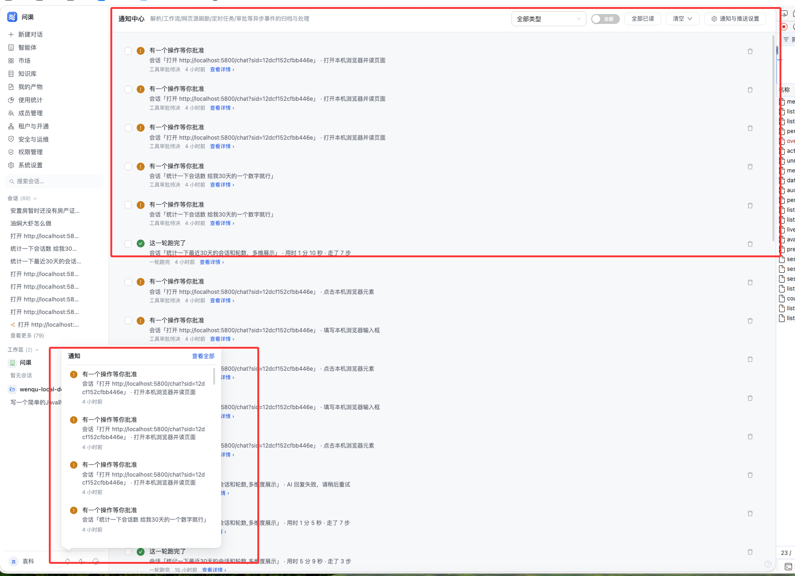

通知中心
从「消息堆积」到「待办清单」
这次不先写代码：先给出完整方案与 7 张高保真效果图。重点解决截图里的两件事—— 同一会话反复刷屏与裸 URL/内部类型常量泄漏到界面； 同时把通知中心、铃铛浮层、手机 sheet、个人设置四处收进同一套信息架构。
一页结论：只做四件事
通知不是「消息流」，而是「异步任务的结果与需要人做决定的地方」。这次升级只围绕四件事展开， 每一件都对应截图里能看到的症状，不做无关重构。
| 要做的事 | 具体动作 | 解决什么 |
|---|---|---|
| 降噪 | 同一会话/同一资源的「待处理」条目聚合成一组，可展开；每条仍保留自己的 approvalId 深链 | 截图里 3 条一模一样的「有一个操作等你批准」只剩 1 组 |
| 分级 | 用「待处理 / 异常 / 完成 / 全部」四个语义桶替代单层时间流，桶上带未读角标 | 进入页面先看到「有 8 件事等我」，而不是先读 20 行标题 |
| 清洗 | 通知落库与渲染两处都清洗 URL/query 串，并补全 2 个漏登记的类型 | 界面不再出现 http://localhost:5800/chat?sid=… 与 tenant-request |
| 一致 | 抽一个共享列表组件 + 一份共享跳转语义，PC 页、浮层、手机 sheet、设置页复用 | 角标、已读、分组、深链四处不再各说各话 |
现状诊断：能用，但读起来很累
下面的判断全部来自代码与截图，不是猜测。左侧是用户上传的现状截图，右侧是代码里对应的根因。

同一会话的审批反复出现
去重键按 approval:<approvalId>，不同审批 ID 不合并；界面也没有按会话聚合，所以 3 条几乎一样的内容各占一行。
裸 URL 与 query 串直接上屏
会话标题取首条用户消息前 50 字，通知正文又复用了标题；http://localhost:5800/chat?sid=… 原样显示并折行。
19 类通知平铺，没有「要不要我处理」
类型只有标签/图标/色值，没有语义桶；列表按时间单层倒序，待审批与「跑完了」混在一起。
320px 宽、固定高度、长内容截断
浮层与侧栏会话列表视觉黏连，底部条目被裁；标题不换行时还会把右侧动作挤出可视区。
中心页已读，铃铛角标还在
通知中心自持一套列表与未读数，与 useNotifications 没有共享状态，角标最多等 30 秒轮询。
2 类没登记、3 类跳不动、不能搜、不能标未读
tenant-request、quota 会裸露；refType=tenant/quota 无落点；列表无关键词搜索；只能标记已读。
问题与代码证据
| 编号 | 根因位置 | 现状行为 |
|---|---|---|
| P1 | TurnNotifyService · onApprovalPending；NotificationService · create | "approval:" + approvalId 为去重键，不同审批必然各占一行 |
| P2 | SessionService · addMessage 标题生成；TurnNotifyService · describe | 标题 = 首条消息前 50 字，正文 会话「标题」 原样拼接 |
| P3 | useNotifications · NOTIF_LABELS；NotificationCenter 列表 | 只有类型 → 图标/色值，没有 action/alert/done 语义桶 |
| P4 | AppLayout 浮层模板与非 scoped 样式 | width:320px、max-height:380px；行内无 min-width:0 约束 |
| P5 | NotificationCenter 自持列表；AppLayout 的 useNotifications | 两边各自维护未读数，操作后无变更事件 |
| G1 | TenantRequestService:89/182；UsageQuotaService:416 | 字符串字面量 tenant-request、quota 不在前端类型表 |
| G2 | NotificationCenter · navOf；AppLayout · openNotif；MobileNotifSheet · openNotif | 只覆盖 kb/workflow/session/provider/ops，租户与配额无落点 |
| G3 | NotificationService · list / baseWrap | 只支持单个 type，无 types、无 q；无「标记未读」接口 |
| G4 | 三处 openNotif 各写一份 | 同一件事在三端维护三套路由语义，已出现分叉 |
NOTIF_TYPES 一份；未读合并 hitCount+1 的数据语义；
通知是旁路、失败不影响主链路；静音清单只在个人设置维护；Web Push 只在「真的新增一条」时推。
设计目标与原则
先看懂「有没有要我处理的事」
首屏给待处理数量，异常与完成分桶；不要求用户逐条读标题才知道轻重。
同一件事只占一个位置
同会话/同资源的待处理项折叠成组；展开后每条仍能单独跳到可裁决位置，不丢数据。
四处界面同一套语言
PC 页管管理、浮层管速览、手机 sheet 管点开就走；密度不同，信息与操作一致。
标题写清「发生了什么」，副标题才给会话名、工具名、耗时等上下文。
只折叠展示；每条审批的 approvalId、每份工作流的 runId 全程保留。
左侧 3px 主色竖条 + 标题 600，不再整行铺浅蓝底色；满屏未读时也不刺眼。
URL、query 串、tool.approval 这类常量只存在于代码，不上屏。
颜色、圆角、字号全部来自 app.css；不引入新色板或新组件库。
优先级、桶、聚合都由 type + refType + refId + createTime 派生。
信息架构：先分桶，再聚合，最后清洗
三个动作按顺序发生：类型先落到语义桶，桶内的待处理项按资源聚合，所有文案统一清洗。 这三层都在前端派生（桶与聚合）或接口参数（筛选）里完成，不需要新增数据列。
语义桶（唯一来源）
前端派生聚合规则
展示层refType + refIdrefType | refId（会话 / 工作流 / 供应商）日期分段
中心页文案清洗
前后端同规则→ 会话「打开 localhost:5800/chat」
主体抽取：组标题从哪里来
| refType | notifSubject(n) | 组标题示例 |
|---|---|---|
session | 取 content 第一个 · 段 | 会话「打开 localhost:5800/chat」 · 共 3 件待处理 |
workflow | 从 title 提取 工作流「X」 | 工作流「每日简报」 · 共 2 次运行待审核 |
provider | 从 title 提取 模型供应商「X」 | 模型供应商「OpenAI」 · 共 2 件待处理 |
| 其余 | 清洗后的 title | 不使用聚合，直接单条 |
效果图 · 通知中心
四张图分别覆盖默认态、聚合展开态、批量与筛选态、以及空/骨架/错误三态。 示例数据统一为：3 条同会话工具审批 + 1 条工作流审批 + 1 条解析失败 + 1 条一轮跑完。
N1 · 默认态：先分桶，再按日期铺开
通知中心
12 条未读N2 · 聚合展开态：每条审批仍能单独深链
通知中心
12 条未读?approval=。N3 · 批量选择与搜索筛选
通知中心
12 条未读N4 · 空态、首屏骨架、加载失败
解析、工作流、定时任务或对话需要你处理时，会出现在这里。
网络或服务暂时不可用；已读状态不会因此丢失。
效果图 · 铃铛浮层与移动端
浮层负责「速览」，手机 sheet 负责「点开就走」。两者与通知中心共用同一个列表组件与同一份跳转语义， 只是密度与可达动作不同。
N5 · 侧栏铃铛浮层：380px，速览但不难读
统计一下最近 30 天的会话
正在回答…×3 徽标提示数量，点 ▾ 展开；点正文跳最新一条。min-width:0 + ellipsis，右侧动作不再被挤走。N6 · 移动端通知 sheet：390×844
通知
8 条未读 全部已读效果图 · 个人设置「通知与推送」
设置页从「19 个开关平铺」改成「三组 + 组级全开/全关」。用户先决定哪一类值得打扰， 再决定这台设备要不要跳出浏览器。
N7 · 三组分类 + 系统级推送状态
个人设置
管理头像昵称、模型与通知偏好，以及记忆、分享和密钥。通知与推送
组件与交互规格
下面是效果图与实现之间的契约：三种密度、状态矩阵、键盘与无障碍行为。 实现时按这张表写，不再临时发挥。
三种密度
| 项 | page（桌面中心） | popover（铃铛浮层） | sheet（手机） |
|---|---|---|---|
| 行内边距 | 12px 14px | 9px 10px | 11px 12px |
| 最小高度 | 56px | 48px | 56px |
| 图标容器 | 28px / 圆角 8px | 24px / 圆角 7px | 26px / 圆角 8px |
| 标题 | 13px；未读 600 | 13px；未读 600 | 14px；未读 600 |
| 明细 | 12px，2 行 | 12px，1 行 | 12px，2 行 |
| 未读竖条 | 3px 主色 | 3px 主色 | 3px 主色 |
| 右侧动作 | 去处理 + ⋯ | 去处理 + ⋯ | › |
状态矩阵
| 状态 | 行表现 | 出现位置 |
|---|---|---|
| 未读 | 左竖条 + 标题 600 + 图标有色底 | 中心 / 浮层 / sheet |
| 已读 | 无竖条 + 标题常规 + 图标灰底 | 中心 / 浮层 / sheet |
| 聚合收起 | 组头 + 共 N 件 + 最近一条 + 展开 ▾ | 中心 / 浮层 / sheet |
| 聚合展开 | 组头 + 子项列表；子项缩进 12px，左侧细线 | 中心 / 浮层 / sheet |
| 选中 | 行前 checkbox 勾选；组头勾选 = 组内全选 | 仅中心（批量模式） |
| 加载 | 与真实行等高的骨架块 | 中心 6 行 / 浮层 3 行 / sheet 4 行 |
| 空 | 铃铛图标 + 一句说明 + 设置入口 | 中心 / 浮层 / sheet |
| 错误 | 行内错误图 + 重试按钮 | 中心 / 浮层 |
C1共享列表组件
NotificationList.vue 负责日期分段、聚合展开、三种密度、骨架/空/错误态；
通知中心、浮层、手机 sheet 只传 variant 与动作回调，不再各写一套。
- props：
items / variant / loading / error / selectable / selected / showDateHeaders / grouped - emits：
open / toggle-select / mark-unread / delete / load-more / retry - 展开状态存
localStorage，keywq.notif.expanded，上限 20 个
C2共享跳转语义
notifTarget(n, { mobile }) 一处维护所有深链；三端不再各写 openNotif。
租户与配额补上落点，审批类保留二级目标。
- tool.approval →
/chat?sid=&approval=（移动/m/chat） - workflow.approval →
/agents?tab=workflow&wf=&run= - tenant →
/tenants?tab=requests；quota →/dashboard?tab=cost
C3文案清洗
后端 NotificationService.create 落库前清洗；前端 notifCleanText 渲染历史数据。
URL 去 query/fragment；超 64 字符只留 host/…；标题/正文截断。
- 标题上限 190 / 正文 990（列宽），前端视觉再 line-clamp
- 会话主体从 content 第一段取；工作流/供应商从 title 正则取
C4键盘与无障碍
行容器 role="button" tabindex="0"，Enter/Space 打开；内部 checkbox/按钮 @click.stop。
- 组头
aria-expanded；页签role="tablist"+aria-selected - 未读角标
aria-label="N 条未读"；focus 环沿用全局2px accent - 触屏动作常驻，不依赖 hover；点击热区 ≥44px
数据与接口：3 个增量能力，0 张表变更
后端只做必要调整：列表多类型/关键词筛选、标记未读、类型常量补全。优先级、桶、聚合都由前端派生， 不新增列，也不改审批链路。
| 接口 | 改动 | 兼容性 |
|---|---|---|
GET /notification/list | 新增可选 types（逗号分隔，优先于 type）与 q（标题/正文 LIKE） | 现有 type / unreadOnly / cursor / limit 不变，旧前端不受影响 |
POST /notification/unread | 新增；body {ids}，只把属于自己的已读改回未读 | 幂等；不存在/别人的 id 静默忽略 |
NotificationService.create | 落库前执行 clean()：折叠空白、去 query、超长 URL 留 host、截断 | 只改文案，不改触发面与去重语义 |
| 类型常量 | 补 tenant.request / tenant.approved / quota；租户两类拆开 | 历史 tenant-request 仍可显示「租户开通」 |
| 跨端事件 | app:notif-changed（source=center/widget） | 仅未读数/列表刷新，不触发二次广播 |
补全的类型与落点
| 类型 | 中文标签 | 桶 | 落点 |
|---|---|---|---|
tenant.request | 租户开通申请 | 待处理 | /tenants?tab=requests |
tenant.approved | 租户已开通 | 完成 | /tenants?tab=tenants |
quota | 用量配额触顶 | 待处理 | /dashboard?tab=cost |
tenant-request（历史） | 租户开通 | 信息兜底 | /tenants?tab=requests |
c_ai_notification 表结构、SchemaMigrator、NotificationMapper、
审批/工具卡链路、会话标题生成、Web Push 协议。没有数据库迁移，也没有历史数据回填。
实施计划
产出本 HTML；复制现状截图；自检无横向溢出、锚点可用。不写业务代码。
clean()、types/q、markUnread、3 个类型常量、租户拆分；前端桶/清洗/主体/跳转/聚合/事件。
NotificationList.vue：三密度、日期分段、聚合展开、选择、骨架/空/错误态；先在中心页接入。
页头、吸顶工具条、筛选摘要、批量条、页脚；删除本地重复 fmt/navOf。
380px/460px、双页签、紧凑列表、页脚出口；provide 完整实例；删重复 CSS。
分段筛选、触屏密度、短说明、深链；去掉长段解释。
三组分类、组级开关、全部接收/恢复默认；Tenants/Dashboard 支持 query 深链。
桌面/移动/暗色/键盘；构建；通知静音与 Web Push 不回归。
验收标准
方案书与效果图
功能（阶段 1–7）
不回归
type 参数调用方式仍可用。npm run build 与 mvn -q -DskipTests compile 通过。已确认的 3 个执行口径
以下三条已按评审意见定稿，实现按此执行；其余规则见 §3–§9。
聚合组默认收起
先看到「共 3 件待处理」，点 ▾ 再展开；展开后每条仍保留自己的「去处理」深链。
已确认：默认收起铃铛浮层保留逐条删除
行内「⋯」提供「标记未读 / 删除」；触屏上点一下即可展开菜单，不依赖 hover。
已确认：保留逐条删除手机 sheet 加入批量管理
顶部加「选择」入口：勾选、全选、标记已读、删除、取消选择；批量删除同样走二次确认。
已确认：手机做批量